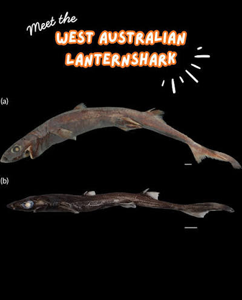

Breaking News
Scientists have discovered a new deep-sea fish with bioluminescent fins off the coast of Australia. The unnamed species is believed to have unique traits that could contribute to future medical research and biotechnology.

Read more